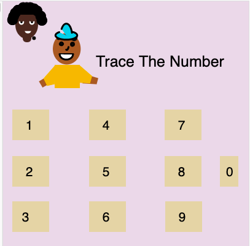
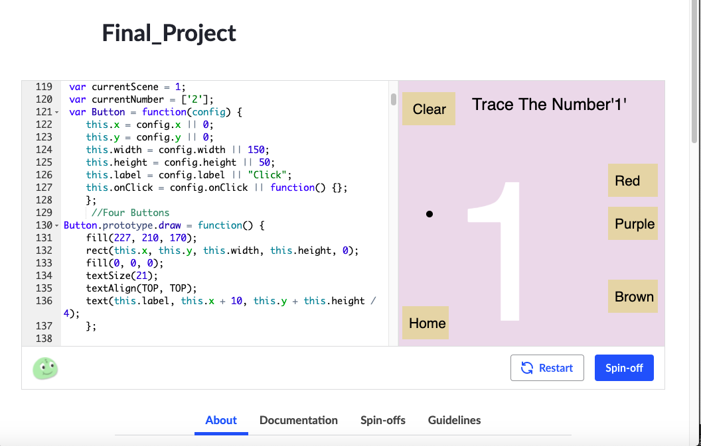

| |
|
|
Tracer Game
The ProcessThis is my final project I created my CSC 106 course. |
Juggling many responsibilities is a very difficult thing to get done in a certain time frame but it all comes down to staying calm. A couple ways that can help maintain many tasks at once is make a set schedule, give each task a time limit, block out distractions and establish a routine. Many people face the biggest problem which is "Procrastination". |
Back to home page